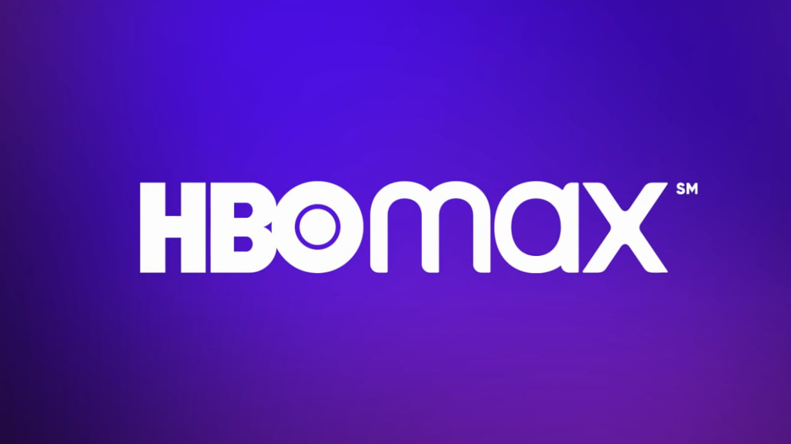

Kokorokó


Sobre Nosotros:
Kokorokó es una aplicación web que sirve para la notificación de los servicios a los que los usuarios están suscritos.
Muchas personas se olvidan de realizar los pagos de sus suscripciones y en consecuencia tienen que realizar un pago mayor. Con la aplicación buscamos reducir este problema.